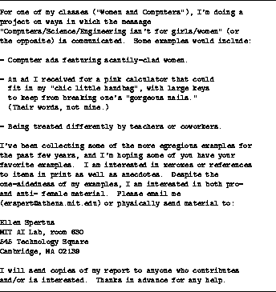

Next: The History of
Up: About This Paper
Previous: About This Paper
In this document, I include some anecdotal evidence in addition to
quoting other studies and reports. One way I solicited information
was through computer networks. I posted requests for information to
private and public electronic mailing lists --- that is, systems that
allow a person to send messages from their computer to the computers
of other people. My initial request is included in
Figure  . It was sent to a private list of women in
computer science and the following public ``newsgroups'' (electronic
bulletin boards): comp.society, comp.misc, alt.folklore.computers,
comp.edu, soc.women, and soc.feminism. From the net, I got
roughly 150 responses. Some of these included pointers to published
reports or to examples of sexism or anti-sexism in published works.
These letters often included reactions (such as ``I found
such-and-such upsetting'') and opinions (``I am opposed to
such-and-such''). Other letters included anecdotes. Some of these
letters were from sources I had reason to trust (friends of friends);
for others, I had no way of verifying any stories. Other categories
of letters were polite dissent and ``flames'' --- attacks from people
who disagreed with whatever they inferred from my call for
information. As described in the introduction, I also learned from my
critics and attackers.
. It was sent to a private list of women in
computer science and the following public ``newsgroups'' (electronic
bulletin boards): comp.society, comp.misc, alt.folklore.computers,
comp.edu, soc.women, and soc.feminism. From the net, I got
roughly 150 responses. Some of these included pointers to published
reports or to examples of sexism or anti-sexism in published works.
These letters often included reactions (such as ``I found
such-and-such upsetting'') and opinions (``I am opposed to
such-and-such''). Other letters included anecdotes. Some of these
letters were from sources I had reason to trust (friends of friends);
for others, I had no way of verifying any stories. Other categories
of letters were polite dissent and ``flames'' --- attacks from people
who disagreed with whatever they inferred from my call for
information. As described in the introduction, I also learned from my
critics and attackers.

: Call for Data
The data in my paper falls into the following categories:
- Published statistics.
- Quotations from computer books or magazines.
- Events I have personally witnessed or taken part in.
- Quotations and paraphrases from published and unpublished
reports.
- Anecdotes and opinions from people I know.
- Anecdotes and opinions from friends of friends.
- Anecdotes and opinions from people I don't know.
Readers will have their own opinions on how much credence to give to
each category. The only category I have qualms about is anecdotes
from people I do not know. Consequently, I have never based an
argument entirely on them. Unfortunately, anonymity was important to
many people who gave stories, and I decided all contributions, except
from published or privately-distributed reports, would be anonymous and contain as little identifying information as possible.
In my records, I have the source of every piece of data or story, in
context. If any reader, for their own studies or peace of mind, needs
to know the trustworthiness coefficient of a given anecdote, they can
contact me, and I will provide whatever further information I can
without violating anonymity. While false anecdotes could have been
passed on by dishonest or misinformed sources, it is highly unlikely
that more than one or two, if any, exist. In any case, I have
prefaced unvouched-for opinions and anecdotes to indicate the level of
indirection, i.e. ``a female graduate student wrote such-and-such'' instead of ``a female graduate student had the following experience''.
Next: The History of
Up: About This Paper
Previous: About This Paper
Ellen Spertus
Sat Jan 28 18:40:31 EST 1995